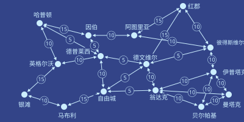

泽从空港的大门走出来，回身把门扶住。
“妈，快点！”他喊道。
泽的母亲敏快步跟上，从门里走了出来。白跟在后面，手里拎着一个购物袋。
3人顺着指示牌走到出租车候车点，把行李塞进后备箱，拉开车门坐了进去。
“欢迎来到自由城，你们俩！”白大声说。
“能来真好。”敏回答。“其实这是我头一回出国。”
“那这地方跟红郡比怎么样？我看你到现在哪儿都去过了。”敏接着问。
“哦，我觉得红郡更好看。可惜北极的无人机一闹，那边整整5天航班全取消了。”
“那真是太糟了。不过到目前为止，我觉得自由城棒极了！也就是说，等我哪天真去成红郡，兴致不会被提前耗掉，到时候对红郡的那股兴奋劲儿，还能跟现在对自由城一样足！”
车里安静下来，3人各自望着出租车窗外。车沿着一条高速路开，路边的楼各式各样——有的矮，有的高；有的石头砌的，有的水泥浇的，有的玻璃配钢架；有的好看，有的难看。有些盖到一半就停了工，像是被废弃了。当中还夹着几处确实讨人喜欢的地方：小公园，长椅，树栽得整整齐齐，人在里面待着，会觉得整座城市的其余部分都不存在。
头顶嗡嗡地飞过几架小型飞行器，有的载着单个乘客，有的运着货——多半是给那些有钱又急得不行的人送吃的。
远处有一片区域明显比别处体面，四周围着一道高高的灰、紫两色相间的墙。坐在右侧的白和泽都把目光转了过去。
“大概是本地的大梅港。”白琢磨着说。
出租车拐下高速路，出了匝道，接着沿一条街往前开，绕过了好几个环岛。
有那么几分钟，路上的人和楼里的陈设，看着都比泽国任何地方阔气得多。忽然，车从一座高架桥下穿过，桥那边的房子一下子破旧了不少，餐馆和店铺也更简陋，外面骑摩托车的人多了起来。
出租车一条街一条街地穿过自由城，泽、白和敏一路看下去，坐在安全的茧子里打量四周。
又开了5分钟，出租车一拐，驶进一个车库。车停稳，车门打开。
“谢谢！”敏喊道，打开后备箱。3人取了行李，走进酒店。
泽把手表拍到一根一米高的柱子顶上，那里有个绿色圆圈，正中间写着“办理入住”。
过了一个嘀嗒，圆圈响了一声。
信誉分 ≥ 100已验证✓ | 支付成功✓ |
泽、白和敏的手表同时震了一下，确认了各自的房门钥匙。
把行李放进房间、冲了个澡之后，泽走出电梯，重新回到酒店大堂。白已经在那儿了，正望着窗外。
“妈说她得睡一觉，我们出去逛逛吧。”泽提议。
白点点头。两人走出酒店，进了自由城的户外天地。
“话说回来，你为什么答应跟我一起来？”白问。
“嗯，这显然是我在很长一段时间内成本最低的一次出国机会。”泽回答。
“半决赛我们俩都赢得很轻松——我的对手根本没料到下到4,000回合会突然改规则——我看你赢得还更快。所以决赛就是我和你。”
“所以这是个独一无二的局面。换成平时，这就是个囚徒困境：我们谁都不能歇下来享受点什么，因为只要一方歇了，另一方就会在大赛前猛补，占到便宜。但这次不一样——因为我们可以一起歇，就能确定谁也没在偷偷干别的。”
“而且剩余很可观——我和妈这辈子都是头一回出国。”
“那你又为什么答应带上我？”
“这么一想，差不多是一样的。只是没用那套博弈论去算。”
“不过对我来说，你所谓的‘剩余’，就是跟你待在一起。”
泽哼了一声。
泽和白来到一栋楼前，它比周围明显更大、也更气派。
招牌上写着“自由城经济研究所”。
研究所名字的正下方列着一张入场费价目表，票价由一个二元函数决定：随你在里面停留时间的平方根递增，随你的学术与智识信誉分升高而递减。
学术与智识信誉分很难挣。那种可以零知识抵押、用来换贷款或者办酒店入住的信誉分，来得容易；只有赖过账、或者把酒店房间砸过好几回，才会变难。学术与智识信誉分就不一样了，得真做点扎实的活儿才行。
入口设了闸机，上面亮着绿色圆圈。泽和白用手持终端一碰，走了进去。
楼里是一整条螺旋状的坡道，绕了好几圈。沿着外墙走的话，几乎感觉不出坡度——周长大约300米，绕一圈才升高4米。
正中间是电梯和楼梯，留给想快点上下的人。
泽和白慢悠悠地沿坡道走，不久看见一家餐馆。一男一女坐在那儿，喝着茶，吃一盘蔬菜配米饭。旁边有块大屏幕，正在放一场讲解联合城邦共治制度的讲座。

“两座城市建立共治关系后，各自选出对方议会中的一定比例席位。”
“这个比例出自事先商定的数字。按人口与 GDP 的几何平均来算，较大的一方按商定比例选出较小城市议会中的席位；较小的一方在较大城市议会中的比例，则等于商定比例除以两城规模之比的平方根。”
“你也许会问，为什么是平方根？因为事实证明，较大的参与方持有较大份额的治理权时，那份效用会超线性地大于小份额的效用——”
泽不再听了，任脑子自己转，试着从最基本的原理把这套数学推出来。
白朝桌边那两人走去。
泽还在算那套数学，跟着白走。两人一路走，直到几乎站到了那对正在吃饭的人跟前。
“你们好，两位忙吗？”泽有点局促地冒出一句。
“啊，不忙，一点都不忙。”那女人回答。
“来，跟我们坐吧，我是游客，最喜欢遇见本地人，好多了解了解这地方。”
“啊，我们也是游客，从泽国来的。”泽回答。“我叫泽。”
“我是白。”
“我叫塞拉。”那女人回答。“这位是我的……朋友，扬。”
泽和白坐了下来。
“那你们是从哪儿来的？”白转头问。
“维里迪亚。”塞拉回答。
“我其实就是本地人。”扬补了一句。
“那你们来这儿是做什么的？”
“我是写博客的，主要写经济和文化。我和丈夫刚带完这一轮孩子，孩子现在在共同家长那边，所以我们俩都算是在休假——”
“嗯，也不算真休假，还是在工作。就是一边旅行一边看看。”
“那自由城到现在感觉怎么样？”
“有些方面确实自由。有些方面就不一定了。”
“这里穿隐私袍的人比维里迪亚和泽国都少，那是因为大家都开车出门，有意思的事基本都发生在那些封闭的院落里。”
“泽国怎么样？”
“老样子。读书，下民本棋。我还在琢磨以后是搞物理还是搞密码学。”
“跟他说说你胳膊的事。”白低声说，声音却大到另外3人都听得见。
“哦对，前阵子我们教室被炸，我胳膊断了。”
塞拉和扬都愣住了——先是被这条消息本身，接着又被泽讲这件事时那副满不在乎的样子。
“袭击越来越厉害了吗？”
“他们开始更多地冲教室来。还听说越来越多的监控无人机被偷运进来。”
“那泽国是不是也打算搞一套自己的反监控网络，好跟上形势？”
“问题在于，北极人在各个机构里都有间谍。所以反监控网络要是看得太多，就成了他们自己的武器。”
“所以我们才一直在啃密码学。每台监控摄像头都跑一套算法，只在情况可疑时才吐出数据；每次吐数据就往密码学网络发一个哈希，这样我们就能追踪这种事发生的频率；再加上一整套硬件认证和随机红外扫描，确保摄像头跑的程序确实是它声称的那个。”
“甚至有条规矩：任何人都可以去把公共场所的摄像头拧开，自己检查。还有些俱乐部专门干这个，把报告发到网上。这套东西相当先进。我真希望自己能弄懂这些加密、证明和认证背后的数学到底是怎么回事。”
“得了吧，我们整个去中心化大学分部都知道你是热力学的高手，比老师还强。你完全可以洗点转去密码学，把这些全搞明白。”
“你是存心让我没法专心准备民本棋决赛吧？”
一个机器人滑到他们桌边，屏幕上是一份菜单。
白和泽凑过去看菜单，轮流按了几下按钮，要了茶，还点了份蔬菜饭，跟塞拉和扬吃的那种差不多。
“这场军备竞赛占掉你们多少时间？”扬问。
“占多少时间？我们有百分之几的人是全职干这个的；对其他人来说，除了学会怎么保命，这本来不该算我们的活儿。至于占掉我们多少快乐、多少精神、多少魂——那是另一个问题。”
扬和塞拉叹了口气。
几分钟后，机器人端着饮料回来；再过几分钟，又送来了饭。他们吃着，时而说些轻松的话题，听泽和白讲泽国文化的种种细节——民本棋、泽国语、人们盼着国家崛起的那股心气——时而只是沉默。那块屏幕还在讲共治，还在放各种图表和数学公式，这时已经没人再看了。
| 来自 | 消息 | 时间 | |
|---|---|---|---|
| → | ［正在呼叫］ | 58130 |
塞拉点了点手表。
她勉强辨认出格拉迪亚斯的脸。
“在自由城过得怎么样？”格拉迪亚斯问。
“刚跟扬吃了午饭，然后来了两个泽国的可爱孩子。”
“他们怎么样？”
“他们特别好。不过北极人对他们做的事太让人难过了——两个里头有一个最近胳膊受了伤。”
塞拉决定换个话题。
“你最近怎么样？”
“挺好。”
他顿了顿。
“我在琢磨一件事。”
“什么事？”
“最近有人跟我提了个建议——不要去当监审官，改当掌则人。”
“诶！”
“你觉得呢？”
格拉迪亚斯停了几秒，明显是在斟酌怎么回答。
“对维里迪亚来说，这更重要——真正把评则本身定对。而且我觉得这份工作会更有意思。”
“我的第一反应是，我其实支持这个决定。”
“你知道吗，那两个孩子走了以后，这五十来分钟我一直在想泽国。后来扬也很快去开会了。”
“他们从我们的图谱资助里获益不少，对吧？”
“确实如此。”
“可评则呢？有没有哪条评则，是在鼓励企业把产品做得对泽国更有用？”
格拉迪亚斯想了一会儿。“没有吧，至少我想不出哪条。”
“那也许你就该去当掌则人。这可以算你的一个项目！想办法制定或调整评则，让它更好地支持泽国。”
塞拉停了一下。
格拉迪亚斯瞪大眼睛，愣愣地看着她。
“对，就当掌则人，肯定没错。这是最正确的选择。”
“会很有意思的。俗话说，Dze go ba fau gie！”
Zei walked out through the door of the air harbor, and held the door open behind him.
"Come on, Mom!", he shouted.
Zei's mother, Min, hurried forward and came out through the door. Bai followed along behind, carrying a shopping bag.
The three of them followed the signs to the taxi stand, and immediately put their luggage into the taxi's luggage trunk, and opened the doors to get in.
"Welcome to Freetown, you both!", Bai exclaimed.
"Glad to be here", Min replied. "Actually my first time abroad."
"So how does this compare to Redshire, since I see you've been everywhere by now?", Min followed up.
"Oh I think Redshire is nicer. Was a shame that the Arctic drones made them cancel all the flights for the past five days."
"That really was too bad. But so far I think Freetown is great! So that means whenever I make it to Redshire I won't be spoiled, and I'll feel just as excited about Redshire then as I am about Freetown now!"
The conversation quieted down, and the three of them stared out the windows of their taxi. They were driving along a highway, and there were buildings of all shapes and sizes - some short, some tall, some stone, some concrete, some glass and steel, some beautiful, some ugly. Some halfway under construction, seemingly abandoned. And among them a few genuinely charming places, small parks with benches and carefully arranged trees to make the rest of the city seem invisible to someone inside.
A few small copters buzzed in the sky overhead, some carrying individual passengers and others carrying goods - most likely food for the wealthy and extremely impatient.
In the distance, there was one area that seemed noticeably nicer than the others, that was surrounded by a high grey and purple colored wall. Bai and Zei, sitting on the right, both turned their attention toward it.
"Probably the local Greater Plum Harbor", Bai mused.
The taxi swerved off the highway to take an exit. It then continued driving along a street, winding through several roundabouts.
For a few minutes, the people and the insides of the buildings looked considerably richer than anything in Dzego. Suddenly, they passed under a highway, and on the other side the structures looked significantly more run-down, the restaurants and stores more basic, and more people outside were driving motorcycles.
As they passed through Freetown street by street, Zei, Bai and Min continued looking, observing the surroundings from inside their safe cocoon.
After five more minutes of driving, the taxi turned, and drove into a garage. It stopped, and the door opened.
"Thank you!", Min shouted, and opened the trunk. The three of them took their luggage, and entered the hotel.
Zei slapped his watch against a green circle on top of a one meter tall pole, which was labeled "Check in" in the center.
After one tick, the circle beeped.
Rep score ≥ 100 Verified✓ | Payment successful✓ |
Zei, Bai and Min's watches all buzzed in unison, confirming their room keys.
Having put his luggage into his room and taken a shower, Zei stepped out of the elevator and once again entered the hotel lobby. Bai was already there, looking outside a window.
"Mom said she needs to sleep, we should go explore", Zei suggested.
Bai nodded. The two exited the hotel, and entered Freetown's great outdoors.
"So why did you agree to come with me anyway?", Bai asked.
"Well it was obviously the lowest-cost opportunity I would have to go abroad for a long time", Zei replied.
"We both won our games in the semi-finals easily - my opponent was just not prepared for the sudden rule change four thousand turns in - and I saw you won even faster. So the finals are between me and you."
"And so it's a unique situation. Normally, there's a prisoner's dilemma: neither of us can take a break and enjoy anything, because if either of us does, the other will cram harder right before the big game and gain an advantage. But this time, that's not true - because we can both take a break together, so we're sure that neither of us is doing anything else."
"And the surplus is high - both Mom and I get to go abroad for the first time in our lives."
"Now why did you agree to take me?"
"Pretty much the same, now that I think about it. Just without the game theory math."
"Though for me what you call the surplus is spending time with you."
Zei groaned.
Zei and Bai arrived at a building that looked noticeably larger and nicer than its surroundings.
"Freetown Economics Institute", a sign read.
Right below the name of the institute, the sign listed a schedule of admission fees, featuring a formula that was a function of two variables: increasing with the square root of how much time you spend inside, and decreasing the higher your academic or intellectual reputation score rises.
Academic and intellectual reputation score was difficult to get. The kind of reputation you could zero-knowledge-collateralize to get loans or check into hotels, that was easy to get; it was only hard if you had failed to pay back loans or trashed hotel rooms multiple times. Academic and intellectual reputation, on the other hand, required doing serious work.
There was an entrance gate with turnstiles and glowing green circles. Zei and Bai tapped their hand devices, and walked through.
The inside of the building was a single spiral-shaped sloped floor that looped around several times. If one walked along the outside wall, the slope was barely noticeable - a circumference of perhaps three hundred meters that one could walk around to climb four meters.
In the middle, there were elevators and staircases, for those who wanted to go up or down faster.
Zei and Bai leisurely walked along the floor, and soon saw a restaurant. Two people, a woman and a man, were sitting, drinking tea and eating a dish with vegetables and rice. There was a large screen, at that moment playing a lecture explaining the United Cities' co-governance system.
"When two cities are in a co-governance relationship, they each elect a percentage of the other's parliament."
"The percentage is based on a pre-agreed number. Whichever city is larger, as computed by a geometric average of population and GDP, elects that pre-agreed share of the smaller city's parliament. Whichever city is smaller elects a share of the larger city's parliament equal to the pre-agreed share, divided by the square root of the ratio in the two cities' sizes."
"You might ask, why square root? Well, it turns out that the utility of a large share of governance, held by a larger participant, is superlinearly larger than the utility of a smaller share-"
Zei stopped listening, and let his mind ponder, trying to work out the math from first principles.
Bai started walking toward the two people sitting at the table.
Zei, still thinking about the math, followed Bai. They kept walking until they were almost standing over the eaters.
"Hi, are you guys busy?", he blurted out awkwardly.
"Ah no, not at all", the woman answered.
"Please come sit down with us, I'm a tourist, always happy to meet locals and understand this place better."
"Ah, we're also tourists. From Dzego", Zei replied. "I'm Zei."
"And I'm Bai."
"I'm Seila", the woman replied. "And this is my ... friend, Jahn."
Zei and Bai sat down.
"So where are you from?", Bai turned to ask.
"Veridia", Seila responded.
"And I'm actually a local", Jahn added.
"So what brings you here?"
"Well, I'm a blogger, I focus on economics and culture. My husband's and my turn to take care of our children just finished, they're with our co-parents now, so we're both taking a break -"
"Well, not really a break, still working. But traveling and exploring."
"So how has Freetown been so far?"
"Well, free in some ways. Not always in others."
"You don't see as many privacy robes here as in Veridia or Dzego, but that's because people just go around in cars, all the interesting stuff tends to happen in these enclosed compounds."
"How is Dzego?"
"Same old. Studying, playing Minpentai. I'm trying to figure out if I'm going into physics or cryptography."
"Tell him about your arm", Bai whispered, loudly enough that all three of the others could hear.
"Oh yeah, my arm broke when our classroom got bombed a while back."
Seila and Jahn froze in surprise - first at the revelation, and then once again at Zei's total nonchalance in relating the news.
"Are the attacks getting worse?"
"They're starting to go after classrooms more. Have also been hearing about more and more surveillance drones getting snuck in."
"So is Dzego going to, like, add its own counter-surveillance network to keep up?"
"Well, the problem is, the Arctics got spies inside all the agencies, so if the counter-surveillance network can see too much, then it becomes their own weapon."
"That's why we've been trying to figure out the cryptography. Each surveillance camera running an algorithm, revealing data only in those cases where it's suspicious, posting a hash to a cryptographic network every time it reveals so we can track how often it's happening, and then a whole system of hardware attestations and randomized infrared scanning to make sure that the cameras are actually running the code that they say they are."
"There's even a rule that anyone can go and unscrew any camera in public and inspect it themselves. There's entire clubs that do it and publish their reports online. It's pretty advanced stuff. I wish I could understand how all the math behind these encryptions and proofs and attestations works."
"Come on, our whole DU chapter knows you're a hotshot at understanding thermodynamics, even better than the teacher. You can totally re-spec to cryptography and figure this all out."
"Are you trying to distract me from focusing on the Minpentai finals?"
A robot slid up to them, with a menu on its screen.
Bai and Zei started looking, and clicked buttons in turn to order some tea, as well as a similar rice and vegetables dish to what Seila and Jahn were eating.
"How much of your time is this whole arms race taking up?", Jahn asked.
"Of our time? Well, a few percent of us are full-time on it, for the rest, it's not supposed to be our job, beyond keeping up with how to stay safe. Of our happiness, our spirits, our souls? That's a different question."
Jahn and Seila sighed.
A few minutes later, the robot came back with their drinks, and a few minutes after that the robot came back again with their food. They ate, at times engaging in light conversation learning more nuances of Dzego culture - Minpentai, the Dzegoban language, the people's strong will to see the nation rise - and at times silently. The screen, continuing to explain co-governance and show various diagrams and mathematical formulas, now went entirely unnoticed.
| From | Message | Time | |
|---|---|---|---|
| → | [now calling] | 58130 |
Seila tapped on the watch.
She could make out Gladias's face.
"How is your time in Freetown?", Gladias asked.
"Just had lunch with Jahn, and then these lovely kids from Dzego came by."
"How were they?"
"They were wonderful. Though it's so sad what the Arctics are doing to them - one of the two got his arm injured recently."
Seila decided to change the subject.
"How have you been?"
"Good."
He paused.
"I'm pondering something."
"What is it?"
"Someone suggested to me recently - that instead of going for being a Sentinel, I should be a Keeper instead."
"Huh!"
"What do you think about that?"
Gladias visibly paused for a few moments, to ponder his answer.
"It's the more important thing for Veridia, to really make sure that the rubrics themselves are set right. And I feel like the work will be more interesting."
"Well my first instinct is that I actually support the decision."
"You know, I've been thinking about Dzego for these past fifty minutes or so after those kids left, and then Jahn had to go for a meeting soon after."
"They benefit a lot from our Graph Funding, right?"
"Indeed they do."
"What about the rubrics though? Do the rubrics encourage companies to make any of their products more helpful to Dzego in any way?"
Gladias thought for a few moments. "Not really, at least I can't think of anything."
"Well maybe you should become a Keeper. And this could be one of your projects! Figure out how to make or adjust the rubrics to support Dzego better."
Seila paused for a moment.
Gladias stared in response, his eyes wide open.
"Yeah become a Keeper definitely. It's exactly the right choice."
"It'll be fun. As they say, Dze go ba fau gie!"